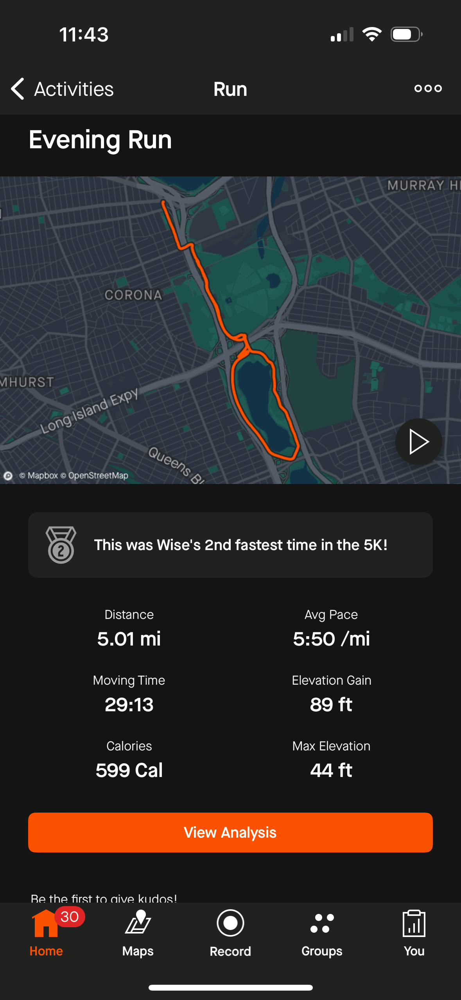
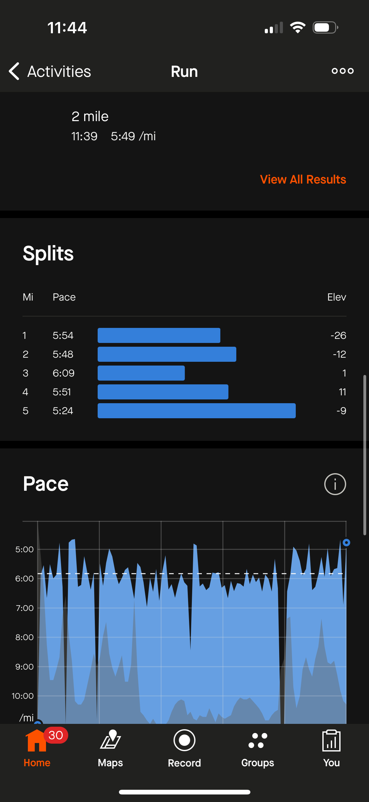
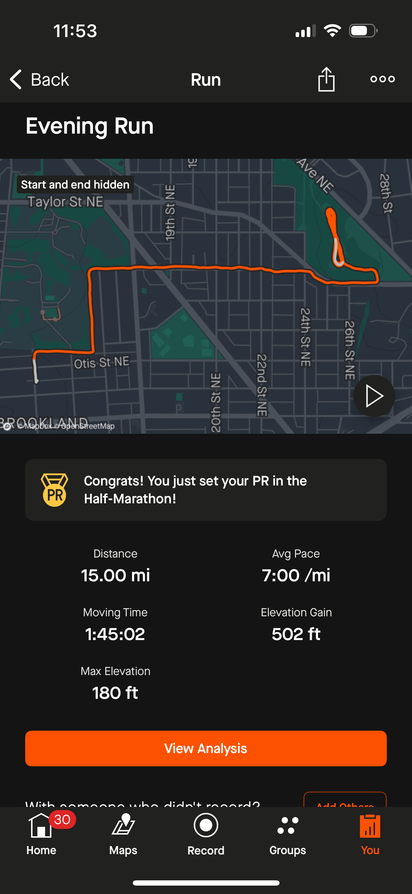
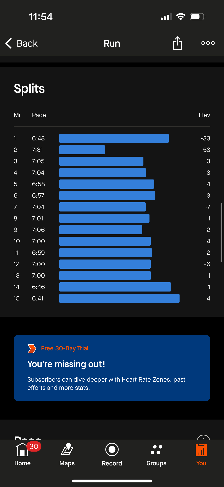
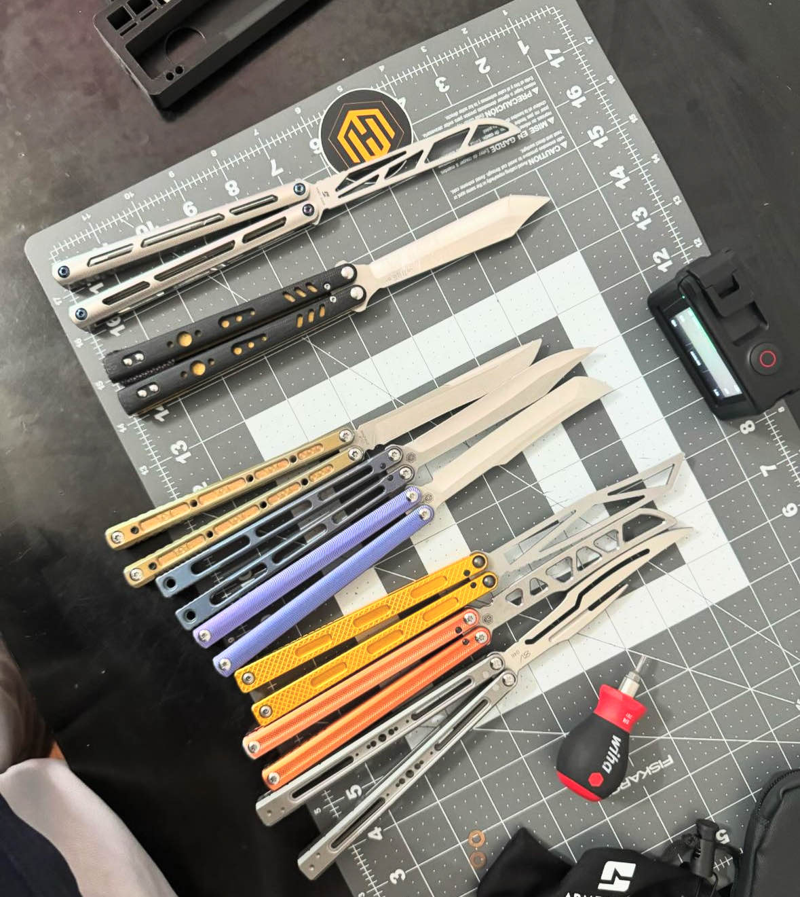
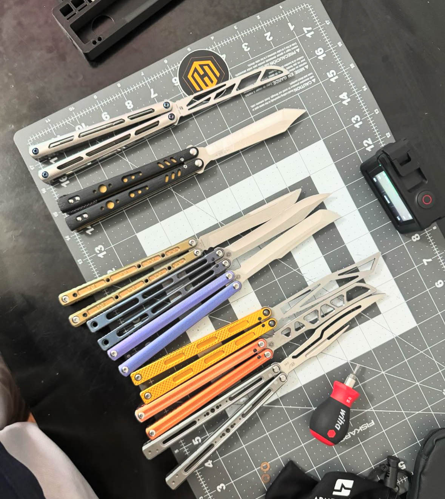

I'm Wise, a software engineer at Resilient Coders
Brief history
From a young age, I’ve always been fascinated by technology. In 7th grade, I taught myself how to fix iPhones and even repaired my classmates’ phones. This early interest in tech led me to dive deep into PC gaming, where I spent thousands of hours immersed in various games and eventually built my own PC. These experiences naturally steered me towards a career in programming. Now, I’m pursuing my passion for software engineering, learning HTML, CSS, and JavaScript to build the foundation for my future in the tech industry.
Interests
Running
Running has been a significant part of my life since I started at around 13 years old. Over the years, it has become more than just a hobby; it’s been a constant source of discipline, teaching me the importance of setting and achieving goals. Running has also been an invaluable stress reliever for me—whenever I feel anxious, a good run always helps to clear my mind and bring me back to a place of calm.
5 Miles in 29:13
 15 Miles avg 7:00/mi
 Balisong Flipping
I received my first balisong as a gift from my father when I graduated middle school at 13. I spent countless hours learning new tricks and perfecting my combos. Although other interests took over for a time, I rekindled my passion for balisong flipping in early 2024 and have been more into it than ever before. I’ve built a collection that I’m quite proud of and even taught myself how to tune balisongs with a micrometer. Eventually, I’d like to explore modding balisongs as a side job.
 
